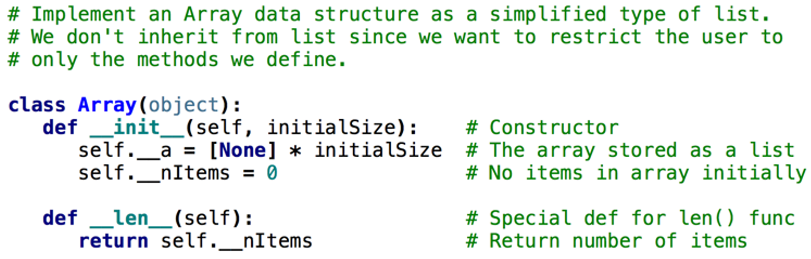

2025-09-10
Array – represents a sequence of items that can be accessed or replaced at given index positions:
arrayarrayName[index]List[]array” usually refers to either a list or the array module’s array type. Here are the main characteristics:
NumPy arrays.Both types support random access (O(1) time for getting/setting elements by index).
Lists and arrays are mutable: you can change, add, or remove elements.
Type Consistency:
array model includes an array class:Array that adheres to the restrictions mentioned earlier but can hold items of any typeArray class uses a Python list to hold its items[]len functionstr functionfor loop with array objects| User’s Array Operation | Method in the Array Class |
|---|---|
| a = Array(10) | init(capacity, fillValue=None) |
| len(a) | len() |
| str(a) | str() |
| for item in a: | iter() |
| a[index] | getitem(index) |
| a[index] = newitem | setitem(index, newItem) |
"""
File: arrays.py
An Array is like a list, but the client can use
only [], len, iter, and str.
To instantiate, use
<variable> = Array(<capacity>, <optional fill value>)
The fill value is None by default.
"""
class Array(object):
"""Represents an array."""
def __init__(self, capacity, fillValue = None):
"""Capacity is the static size of the array.
fillValue is placed at each position."""
self.items = list()
for count in range(capacity):
self.items.append(fillValue)
def __len__(self):
"""-> The capacity of the array."""
return len(self.items)
def __str__(self):
"""-> The string representation of the array."""
return str(self.items)
def __iter__(self):
"""Supports traversal with a for loop."""
return iter(self.items)
def __getitem__(self, index):
"""Subscript operator for access at index."""
return self.items[index]
def __setitem__(self, index, newItem):
"""Subscript operator for replacement at index."""
self.items[index] = newItemfrom arrays import Array
a = Array(5) # Create an array with 5 positions
len(a) # Show the number of positions
5
print(a) # Show the contents
[None, None, None, None, None]
for i in range(len(a)): # Replace contents with 1..5
a[i] = i + 1
a[0] # Access the first item
1
for item in a: # Traverse the array to print all
print(item)
1
2
3
4
5Arraylist type instead?
list__a to store the elements of the array__nItems to keep track of how many elements of a have been used so far.__init__ - constructorinsert – insert an item at end of the Arrayget – retrieves the i’th element of the Arrayfind – find an item in the Arraydelete – removes an item from the Array__str__ – return a string representation of the ArrayImplementation 
Client uses the class to create a new array:
insert, find an itemdelete an item__a to store the elements of the array__nItems to keep track of how many elements of a have been used so far.insert – insert an item at the correct place in arrayfind – more efficiently find where an item is (or where it should be) by taking advantage of the sorted order of the items in the OrderedArrayfindinsert an itemdelete an itemif j == self.__nItems then the insertion point returned by self.find() is after the last element in the OrderedArrayith item by performing a constant number of stepsThis means you can compute the address of any element directly using its index, without scanning through the array.
base address and the item’s offset
index multiplied by the size_of_each_elementThus:
address_of_element = base_address + (index * size_of_each_element)
For Python, the size_of_each_element is 1
Array class allows the programmer to specify the length of a dynamic array during instantiationO(1) timeN/2 compares + N/2 movesO(N) timeN items: how many iterations/comparisons?
log2(N), usually known as O(log N)N elements in halfN in half log2(N) times until you get to 161, 30, 15, 7, 3, 1N items
log2(N)N/2 itemsN/2 + log2(N)O(N) since N dominates the - log N term.| Operation | Running Time |
|---|---|
| Access at ith position | O(1), best and worst cases |
| Replacement at ith position | O(1), best and worst cases |
| Insert at logical end | O(1), average case |
| Insert at ith position | O(n), average case |
| Remove from ith position | O(n), average case |
| Increase capacity | O(n), best and worst cases |
| Decrease capacity | O(n), best and worst cases |
| Remove from logical end | O(1), average case |